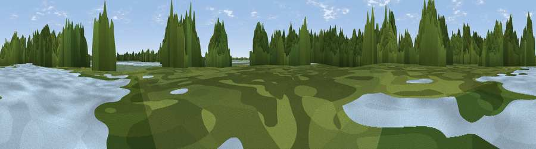

Viewpoint near Hatfield Woodhouse
#43478 in England · top 92% of its area beats it · near Hatfield WoodhouseWhere it is
The exact computed spot (SE 69422 06953). Click the marker for map links.
The view, rendered

A 360° render of this exact spot computed from the terrain model, tree cover and land cover — summer colours, afternoon light, calibrated against photographs of famous viewpoints. Real trees, hedges and buildings will differ in detail.
The panorama
Grey silhouette: terrain skyline in each direction (720 bearings, Earth curvature and refraction included). Dashed green: skyline with trees (+15 m) and buildings (+8 m) as obstacles. Blue strip: how far the ground is visible on each bearing.
Where the view opens
Wedge length = distance to the farthest visible ground on that bearing (vegetation-aware). Rings at 10, 25 and 50 km.
What fills the view
44% woodland · 15% water · 14% wetland · 13% cropland · 12% grassland · 2% built-up
Angular shares of the visible panorama (visual magnitude), not map area. Landscape diversity 0.66 (0–1 Shannon).
Key numbers
More beautiful places nearby
The staircase of upgrades: each row has a higher view potential than everything closer. Driving times are estimates from straight-line distance, calibrated against real road routing — check an actual route before setting out.
| Place | Direction | Drive | Score |
|---|---|---|---|
| Viewpoint near Hatfield Woodhouse | N · 1 km | ~3 min | 27.3 |
| Viewpoint near Stainforth | NW · 5 km | ~12 min | 55.9 |
| Viewpoint near Stainforth | NW · 6 km | ~13 min | 57.0 |
| Viewpoint near Stainforth | NW · 6 km | ~13 min | 61.9 |
| Beacon Hill | SSE · 17 km | ~29 min | 65.7 |
| Viewpoint near Maltby | SW · 21 km | ~35 min | 70.8 |
| Viewpoint near Whitley | WSW · 39 km | ~58 min | 72.1 |
| Viewpoint near Oughtibridge | WSW · 39 km | ~58 min | 72.5 |
53.55462, -0.95356 · source: osm viewpoint · position refined by local search. Computed location — check access rights before visiting.